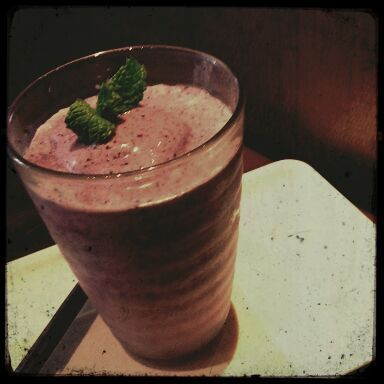

は〜い (/*〃ω〃)/
ろってぃ-だよぉ〜.
ぴぃ〜〜す 。
↑↑あにあにが
昨夜おくってきたの。
『Rotty夢の方々は
きっとこぉゆう まにの幸せそうな顔を
みたいんだと思うよ(・ω・)/』って♪
ぴょん♪
一昨日は 仙台に
楽天イーグルスの応援で
行って参りました！
広いところでガールズルールの
パフォーマンスをするのは
２回目だけど、やっぱりね
とっても気持ちがいい！！
Zeppに来てくださった方とかは
分かるかもしんないけど
Zeppで皆で踊るってなったら
自分の回りが狭くて
おもいっきり動いたら
隣の人とぶつかっちゃうから
考えながら踊ってたんだけど
それこそ、
こないだの氣志團フェスだとかは
会場が大きすぎて
逆にどんだけ体を
振り乱して踊っても
まだ足りないんぢゃないか？
まあだ 本気出さなきゃいけないんぢゃないか？
ってなるんだよね(〃З〃)/
だから 終わった後は
汗びっしょりになるの(´・ω・)
終わった直。
あっちゅいあっちゅい、
髪もぼしゃぼしゃや(〃З〃)
２度目のまいやんの始球式も
うまくいってよかった(`・∀・)
全然 大丈夫だ♪
始まる前 田中将大投手のボール
見させてもらったんですけど、
早すぎて 最初見た時、
自分の前で何が起こったんか
分からんかった ))))
これが、プロ・・・・ っすか。
って驚きピーポな気持ちになった。
ありゃ＼(゜ロ＼)(／ロ゜)／
・ ・ ・ ・ ・

↑これなぁ〜新宿で飲んだ
ブルーベリースムージーやねん♪
とってもおいちかったの。
ぢゃあ〜、そろそろ 〜
お風呂でも、入ろっか(*^^*)
明日も１日楽しく頑張れますように！！
大好きっ(〃∀〃)！
ろってぃ-より。